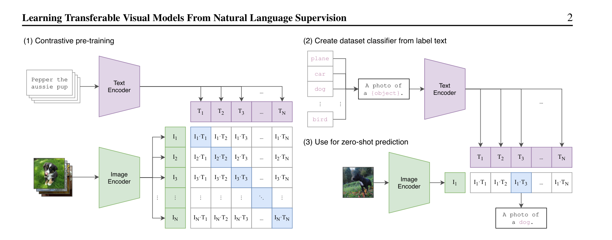
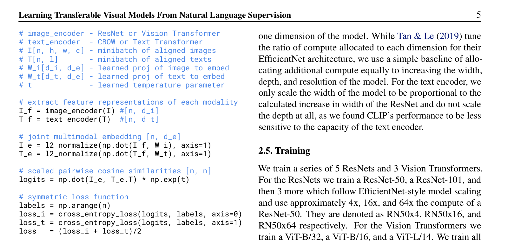
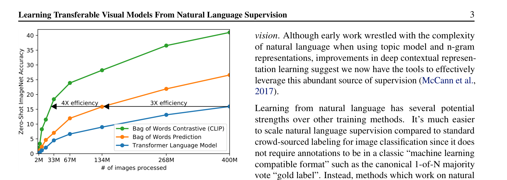
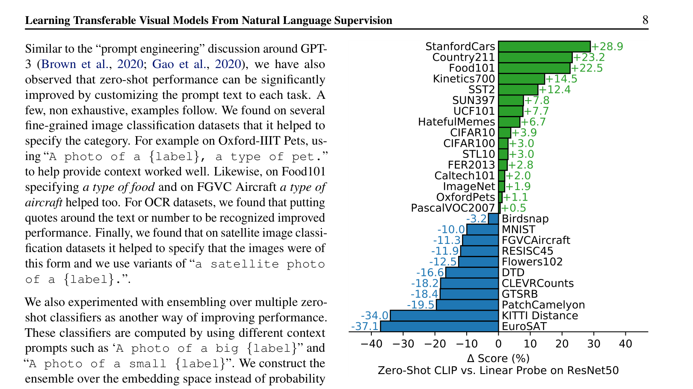
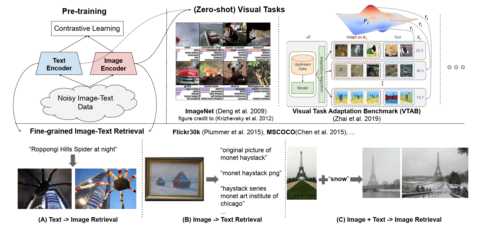
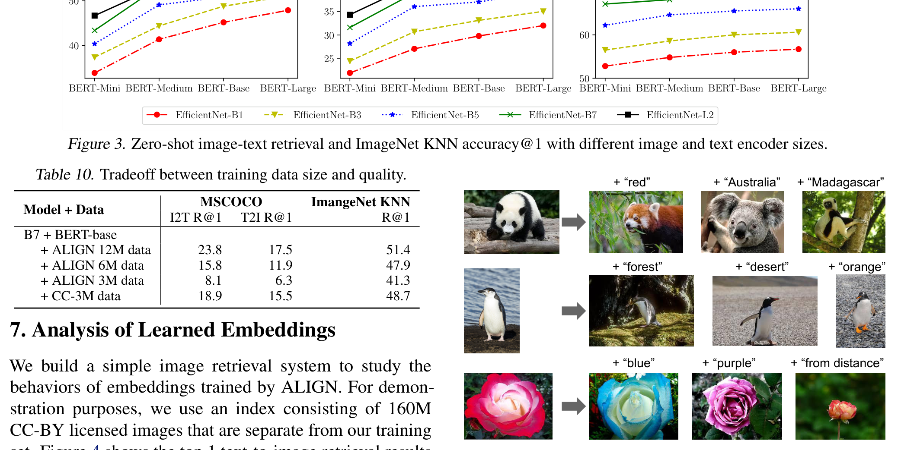

CLIP & ALIGN¶
📄 论文链接： - CLIP: arXiv:2103.00020 | PDF - ALIGN: arXiv:2102.05918 | PDF
目录¶
核心要点¶
- CLIP（Contrastive Language-Image Pre-training） 是 OpenAI 提出的多模态预训练模型，通过自然语言的监督信号训练视觉模型，实现了强大的 zero-shot 迁移能力。
- 核心方法：使用对比学习将图像和文本配对训练，在 4 亿图片-文本对数据集（WIT）上预训练，使模型学到语义性极强的多模态特征。
- Zero-shot 推理：通过 Prompt Template 将分类标签转化为句子，利用预训练的文本编码器生成文本特征，与图像特征计算 cosine similarity 完成分类，无需任何下游任务训练。
- 惊人效果：在不使用 ImageNet 任何训练图片的情况下，zero-shot 达到 76.2% Top-1 准确率，与有监督训练的 ResNet-50 持平；在 30+ 数据集上迁移性能优异，且泛化性和鲁棒性远超传统有监督模型。
- 局限性：在细分类、抽象概念（计数、异常检测）、out-of-distribution 数据（如 MNIST）上表现不佳；数据利用效率低；存在社会偏见风险；few-shot 性能有时反而不如 zero-shot。
1. 背景与动机¶
1.1 传统视觉模型的局限¶
- 现有视觉系统依赖固定的、预定义的类别集合进行训练（如 ImageNet 1000类、CIFAR-10 10类、COCO 80类、Cityscapes 19类、Kinetics 400类）。
- 这种有限的监督信号限制了模型的泛化性：面对新类别时，需要重新收集数据并训练新模型，难以扩展（scale）。
1.2 NLP 的成功启示¶
- NLP 领域通过直接从原始文本数据中自监督预训练（BERT、GPT、T5），取得了革命性成功。
- 这些模型的目标函数与下游任务无关，仅通过预训练获得泛化性好的特征。
- GPT-3 证明了"文本进文本出"框架下，大规模无标注数据比手工标注数据更有效，且无需针对特定任务设计输出头。
1.3 为什么用自然语言作为监督信号¶
- 无需人工标注：只需从网上下载图片-文本配对，省去了定义类别、筛选、清洗、标注等复杂流程，数据规模容易扩大。
- 多模态特征：训练时将图片和文字绑定，学到的不再是纯视觉特征，而是与语言关联的多模态特征，天然适合 zero-shot 迁移。相比之下，单模态自监督方法（MoCo、MAE）只能学到视觉特征，无法与自然语言建立联系。
1.4 之前的工作为何不成功¶
- Li et al. 2017（Visual N-grams）：做了类似的 zero-shot 迁移，但受限于当时没有 Transformer、没有大规模数据集，ImageNet zero-shot 仅 11.5% 准确率。
- VirTex、ICMLM、ConVIRT：基于 Transformer 结合图文，方法已与 CLIP 相似，但规模太小（仅几十万张图片、训练几天），未产生显著效果。
- 弱监督方法（Instagram Hashtag、JFT-300M）：虽在亿级数据上训练多年，但仍使用固定 softmax 分类头（1000选1或18000选1），缺乏灵活的 zero-shot 能力。
- 关键差距在于规模：CLIP 作者认为之前方法效果差不是因为方法本身不行，而是数据规模和模型规模不够大。
2. 方法¶

Figure 1: CLIP 方法概览（对比学习训练 + zero-shot 推理）2.1 数据集：WIT（WebImageText）¶

Figure 3: CLIP 核心代码伪代码- 已有数据集不足：MS-COCO 和 Visual Genome 标注质量高但仅约 10 万样本；YFCC100M 虽有 1 亿样本但标注质量极差（大量自动生成的文件名、相机参数等文不对题内容），清洗后仅剩约 1500 万张。
- OpenAI 自行收集了 4 亿图片-文本对，命名为 WIT 数据集。
- 规模对比：比 Google JFT-300M 多 1 亿样本；按单词数量计，接近训练 GPT-2 所用的 WebText 数据集。
- 该数据集也孕育了 DALL-E 图像生成工作。
2.2 预训练方法选择：为什么用对比学习¶
- 预测型任务（如 VirTex/GPT 方式）：给定图片逐字预测对应 caption，任务太难（一张图可有多种描述），训练效率低。
- Bag-of-Words 方式：将文本全局化为特征，约束放宽，训练效率提高 3 倍。
- 对比学习（CLIP）：仅需判断图文是否配对，约束进一步放宽，训练效率再提高 4 倍（相比预测型共提高约 12 倍）。
- 对比学习只需正负样本定义，无需手工标注，非常适合大规模无监督预训练。
2.3 CLIP 模型架构与训练流程🚗¶
整体流程¶
- 输入：一个 batch 包含 n 个图片-文本对。
- 编码：
- 图像通过图像编码器（ResNet 或 Vision Transformer）得到图像特征。
- 文本通过文本编码器（CBOW 或 Text Transformer）得到文本特征。
- 投射与归一化：通过线性投射层将单模态特征映射到多模态空间，再做 L2 归一化，得到最终对比特征 I_e 和 T_e。
- 计算相似度：n 个图像特征与 n 个文本特征两两计算 cosine similarity，得到 n×n 的相似度矩阵（即 logits）。
- 构建 ground truth：对角线元素为正样本（I_i 与 T_i 配对），其余为负样本。使用
arange(n)创建标签（与 MoCo 中正样本始终在第一位不同）。 - 损失函数：对称交叉熵损失，image-to-text 和 text-to-image 两个方向取平均。
双塔 token 数不一致、向量维度不一致怎么处理？¶
余弦相似度要求的是两个向量维度相同，不要求 token 数量相同。CLIP 的做法是：先把每塔压缩成单一向量，再用线性投射层把两边映射到同一个多模态空间维度。
步骤
- 每塔池化成单一向量
- ResNet 图像编码器：把最后的 global average pooling 换成 attention pooling。论文里描述为“单层 transformer-style multi-head QKV attention”，query 以全局平均池化后的图像表征为条件，输出单一图像向量。
- ViT 图像编码器：沿用标准 ViT，取 CLS token（或等价地聚合 patch token）得到单一图像向量。
-
文本编码器：Transformer 输出中取 [EOS] token 在最高层的激活，做 layer norm，得到单一文本向量。
-
线性投射对齐维度 图像和文本编码器原始输出维度可以不同（比如图像 2048、文本 512），但各自接一个线性投射层
W_i和W_t，把它们映射到同一个维度（比如 512），得到I_e和T_e。 -
L2 归一化 + 余弦相似度 对
I_e和T_e做 L2 归一化，使它们长度为 1，此时点积就是余弦相似度。
注意：CLIP 论文里只叫 attention pooling，没有使用后来 SigLIP 2 / Scaling Vision Transformers 中命名的 MAP head（Multi-head Attention Pooling）这一术语。
正负样本定义¶
- 正样本：n 个配对的图文对（对角线）。
- 负样本：n² - n 个非配对组合。
2.4 训练细节¶
- 无需预训练编码器：由于数据集极大，不易过拟合，图像和文本编码器均从头训练。
- 线性投射层：未使用非线性投射层（SimCLR/MoCo 中非线性投射可提升约 10 点），作者推测非线性投射主要用于适配单模态学习。
- 数据增强极简：仅使用随机裁剪，未使用其他 fancy 增强。
- Temperature 可学习：将对比学习中的 temperature 超参数设为可学习标量，避免调参。
- Batch Size：32768，极大，需多机分布式训练。
- 混合精度n训练：加速训练并节省内存。
- 工程优化：相似度计算分布到多个 GPU 上执行。
- 训练时长：最大 ResNet（ResNet-50×64）在 592 个 V100 上训练 18 天；最大 ViT（ViT-L/14）在 256 个 V100 上训练 12 天。ViT 训练效率高于 ResNet。
- Fine-tune：最佳模型 ViT-L/14 在更大分辨率（336×336）上额外 fine-tune 1 个 epoch。
2.5 视觉与文本编码器选择¶
- 视觉端：共 8 个模型，5 个 ResNet + 3 个 ViT。
- ResNet：标准 ResNet-50、ResNet-101，以及按 EfficientNet 方式调整宽度/深度/输入大小得到的 ResNet-50×4、×16、×64。
- ViT：ViT-B/32、ViT-B/16、ViT-L/14（数字为 patch 大小）。
- 最小与最大模型计算量相差约 100 倍。
- 文本端：Transformer 架构，仅有小改动以提高训练效率。
- 迁移性能与模型大小正相关：模型越大，迁移效果越好，呈平滑趋势，可预测。
2.6 Zero-shot 推理机制¶
Prompt Template¶
- 将类别标签转化为句子模板，如
"a photo of a {class}"。 - 原因一：解决多义性（Polysemy）问题。例如 ImageNet 中 "crane" 既指起重机又指鹤；"boxer" 既指狗品种又指拳击手；"remote" 既可指遥控器也可指遥远。加入上下文后歧义消除。
- 原因二：缩小训练-推理分布差距。预训练时文本多为句子，推理时若仅用单词会导致 distribution gap。
- 使用 prompt template 后准确率提升 1.3%。
Prompt Engineering¶
- 利用先验知识定制 prompt。例如知道数据集是宠物分类时，可使用
"a photo of a {class}, a type of pet"；食物数据集用"a type of food"；OCR 任务中对目标文本加双引号。 - 有效缩小解空间，提升 zero-shot 准确率。
Prompt Ensemble¶
- 使用多个 prompt 模板做多次推理，结果取平均。
- CLIP 代码库中使用了 80 个 prompt 模板，涵盖各种上下文修饰：
"a photo of many {class}"（多物体场景）"a photo of the hard to see {class}"（小物体）"a photo of a large {class}"/"a photo of a small {class}""a photo of a clean {class}"/"a photo of a dirty {class}"- 等等，尽量覆盖物体可能出现的各种环境。
推理过程¶
- 将所有候选类别通过 prompt template 生成句子。
- 句子通过文本编码器得到文本特征（可批量处理，高效）。
- 待分类图片通过图像编码器得到图像特征。
- 计算图像特征与所有文本特征的 cosine similarity，经 softmax 得到概率分布。
- 概率最高的类别即为预测结果。
2.7 摆脱固定类别限制¶
- CLIP 彻底摆脱了 categorical label 的限制：训练和推理均不需要预定义的标签列表。
- 可随意更换候选类别：例如加入"三轮车"即可识别三轮车，而传统 1000 类分类头永远无法输出该类别。
- 这是 CLIP 最核心的强大之处和最吸引人的特性。
3. 实验¶

Figure 2: CLIP zero-shot 与有监督模型的对比3.1 Zero-shot 迁移性能¶

Figure 5: Zero-shot CLIP 与 fully supervised 模型的性能对比与 Visual N-grams 对比（表1）¶
- Visual N-grams 在 ImageNet zero-shot 仅 11.5%，CLIP 达 76.2%，提升超过 60 个百分点。
- 在其他数据集上也大幅领先。
- 注意：这不是公平对比——CLIP 数据量大 10 倍、模型计算量大 100 倍、总训练资源超 1000 倍，且使用了 Transformer（2017年尚未出现）。
27 个数据集上的 Zero-shot vs Linear Probe（图5）¶
- 基线：ImageNet 有监督预训练的 ResNet-50 做 linear probe。
- 16/27 数据集上，zero-shot CLIP 超越了有监督 ResNet-50 linear probe。
- 普通物体分类（车、食物、动作、CIFAR、ImageNet）表现好。
- 困难任务（纹理分类 DTD、物体计数 CLEVRCounts）表现差——这类任务即使对人来说也需要专业知识，zero-shot 要求过高。
3.2 Few-shot 迁移（图6）¶
- 对比 zero-shot CLIP、few-shot CLIP（linear probe）、BiT（Google Big Transfer，ImageNet-21K 预训练）等方法。
- 在 20 个数据集上取平均准确率。
- 关键发现：
- Zero-shot CLIP 与最强 few-shot 基线 BiT 打成平手。
- 当训练样本仅 1/2/4 个时，few-shot CLIP 反而不如 zero-shot CLIP——证明文本引导的多模态学习的强大。
- 随训练样本增多，few-shot CLIP 最终超越所有方法和 zero-shot CLIP，说明对困难任务提供训练样本仍有必要。
3.3 全数据特征学习（Linear Probe）¶
- 选用 linear probe 而非 fine-tune 的原因：
- Fine-tune 可能掩盖预训练模型的缺陷（差的预训练也可能通过微调取得好结果），linear probe 更能反映预训练质量。
- Linear probe 几乎不需调参，便于在大量数据集上公平比较。
- 结果（图10）：
- 27 数据集平均：CLIP（红色五角星）精度-速度 trade-off 最优，超越所有对比方法（EfficientNet、Noisy Student、对比学习模型等）。
- 12 数据集子集：与 ImageNet 高度相关，ImageNet 有监督预训练模型占优，但 ViT CLIP 仍表现良好。
- 与 Noisy Student EfficientNet（ImageNet SOTA，88.x%）对比：CLIP 在 27 个数据集中 21 个超越，其余差距很小。
3.4 鲁棒性与泛化性¶
- 在 ImageNet-V2、ImageNet-Rendition、ObjectNet、ImageNet-Sketch、ImageNet-Adversarial 等分布偏移数据集上测试。
- 有监督 ResNet-101 准确率从 76.2% 骤降至 20% 甚至 2.7%（对抗样本），基本随机猜测。
- CLIP 在所有变体上保持高性能，几乎不掉点。
- 原因：CLIP 将视觉语义与文字语义紧密联系，无论自然图像、动漫、素描还是对抗样本中的"香蕉"，都能正确对应到"banana"这个单词。
3.5 与人类表现对比（表2）¶
- 数据集：Oxford-IIIT Pets（37 类猫狗品种）。
- Zero-shot：CLIP 远优于人（普通人难以辨识 37 种宠物品种）。
- One-shot（每类看 1 张示例）：人的准确率从 50%+ 提升至 70%+，学习速度快。
- Two-shot（每类看 2 张）：人的准确率未进一步提升——说明人主要依靠先验知识与示例结合判断，而非单纯增加样本。
- CLIP 与人在难易类别上表现一致：常见种类两者都准，罕见种类两者都不准，与现实数据分布相关。
3.6 数据集重叠检验¶
- 针对"WIT 数据集是否包含了下游测试集"的质疑，作者做了去重实验。
- 结论：CLIP 的泛化性来自模型本身，而非数据泄露。
4. 局限性讨论¶
4.1 绝对性能仍有差距¶
- Zero-shot CLIP 平均与 ResNet-50 持平，但 ResNet-50 远非 SOTA。
- 与 Noisy Student（88.x%）、最新 ViT/MAE（88-90%+）相比差十几个点。
- 弥补差距需将训练计算量再乘以 1000，即使 OpenAI 也无法承受，需要新方法提高数据和计算效率。
4.2 部分任务 Zero-shot 效果差¶
- 细分类数据集上低于有监督 ResNet-50。
- 无法处理抽象概念：物体计数、异常检测等。
- 在许多领域 zero-shot 性能等同于随机猜测，并非万能方法。
4.3 Out-of-Distribution 泛化仍然脆弱¶
- MNIST 上 zero-shot 仅 88%，而简单 logistic regression 就能超过此结果，随便一个分类器都有 99%。
- 原因：WIT 数据集中几乎没有与 MNIST 合成数字相似的样本，MNIST 对 CLIP 是完全 OOD 的数据。
- 说明 CLIP 与普通深度学习模型一样，在真正 OOD 数据上依然脆弱。
4.4 仍需给定候选类别¶
- CLIP 的 zero-shot 分类仍需用户提供候选类别列表，不够灵活。
- 更理想的方式是直接生成图像标题（captioning），实现完全自动化。
- 未来方向：结合对比学习目标函数与生成式目标函数，兼顾训练效率与灵活性。
4.5 数据利用效率低¶
- 训练 32 个 epoch × 4 亿图片 = 128 亿张图片。
- 若每秒处理 1 张，需 405 年才能看完所有数据。
- 改进方向：数据增强、自监督学习、伪标签等方法可提高数据利用效率。
4.6 评估过程中的隐性偏见¶
- 研发过程中反复使用 ImageNet 测试集指导模型选择和超参调整，已引入偏见，并非真正的 zero-shot。
- 选用的 27 个测试数据集不一定具有代表性。
- 建议：创建专门用于评估 zero-shot 迁移能力的新基准数据集。
4.7 社会偏见与伦理风险¶
- WIT 数据从网络爬取，未经过滤和审查，模型可能学到性别、肤色、宗教等方面的社会偏见。
- 论文第七章专门讨论了模型偏见、监控视频应用风险和不当使用可能性。
4.8 Few-shot 反常现象¶
- 提供少量训练样本（1/2/4-shot）时，性能反而不如 zero-shot。
- 与人类学习截然不同（人看一张示例即大幅提升）。
- CLIP 并非为 few-shot 优化，后续工作需要解决这一问题。
4.9 语言描述的局限¶
- 许多复杂任务或概念即使使用语言也难以描述。
- 对于这类任务，提供训练样本仍然非常有帮助。
5. 后续工作与应用¶
5.1 StyleCLIP¶
- CLIP + StyleGAN，通过文字改变引导图像生成。
- 示例：改变发型、一键卸妆、让猫眼睛变大变可爱。
- ICCV 2021 Oral。
5.2 CLIPDraw¶
- 利用 CLIP 预训练模型指导简笔画生成，无需训练模型，仅需几步梯度下降。
- 普通 GPU 上不到一分钟即可生成。
- 示例："马吃 cupcake"、"3D 寺庙"、"全家去迪士尼"、"自拍"等。
5.3 物体检测（Google）¶
- CLIP 发布约 1.5 个月后 Google 推出基于 CLIP 的 open-vocabulary detector。
- 摆脱基础类限制，可检测任意指定类别（如玩具大象、玩具鳄鱼、玩具鸭子及颜色属性）。
5.4 视频检索¶
- 通过文本输入在视频中检索特定物体/人物/场景。
- 监控视频示例：搜索"印有 Odwalla 文字的卡车"、"白色宝马"、"穿蓝色 T-shirt 骑自行车的人"、"蓝色 Smart 小车"均成功检索。
- CLIP 甚至具备 OCR 能力（识别卡车侧面的文字）。
- 作者团队意识到监控应用的敏感性，论文中专门讨论了相关伦理问题。
6. 总结¶
6.1 核心贡献¶
- 打破固定类别标签范式：训练和推理均不再需要预定义标签列表，收集图片-文本配对即可用无监督方式训练。
- Zero-shot 迁移成为现实：在 30+ 数据集上与有监督模型持平或超越，泛化性和鲁棒性远超传统方法。
- 方法简洁高效：对比学习 + prompt template，实现难度低，影响力巨大。
6.2 论文价值评估¶
- 新意度：极高。打破固定类别范式，引发大批后续工作。
- 有效性：极高。多数据集验证，zero-shot 性能惊人，某些场景超越人类。
- 问题大小：极大。一个模型解决大部分分类任务，且可扩展至检测、分割、检索、生成等领域。
6.3 影响力¶
- CLIP 发布后迅速催生大量后续工作，覆盖物体检测、分割、视频动作识别、检索、多模态、图像生成等各个领域。
- 让人看到从"人工智障"迈向"人工智能"的希望。
6.4 实战验证¶
- 使用 ViT-B 模型对红包图片进行分类测试：
- 给定无关类别（飞机、汽车、狗、鸟）时，模型困惑，各类概率均匀分配。
- 加入"red envelope"后，置信度达 83%。
- 单独测试"red"和"envelope"，模型仍能准确识别"red envelope"，置信度接近 100%。
- 加入"money"、"new year"、"China"等概念，模型坚定选择"red envelope"。
- 去掉"red envelope"选项后，模型选择"China"而非"red"或"envelope"，说明学到了红包与中国文化的深层语义关联。
7. ALIGN — 同期姊妹工作¶
📄 论文：arXiv:2102.05918 | PDF
标题：Scaling Up Visual and Vision-Language Representation Learning With Noisy Text Supervision
机构：Google Research | 发表：ICML 2021
7.1 背景与动机¶
ALIGN（A Large-scale ImaGe and Noisy-text embedding）是 Google Research 提出的视觉-语言多模态预训练模型，与 OpenAI 的 CLIP 几乎同期发表，思路高度相似——均为双塔结构 + 对比学习，但数据来源策略截然相反。
- 现有问题：高质量视觉-语言数据集（如 Conceptual Captions、MSCOCO）需要昂贵的清洗和人工标注，规模受限，限制了模型扩展。
- 核心主张：数据规模可以弥补数据噪声。只要数据量足够大，即使文本质量很差（如网页 alt-text），也能训出强大的视觉-语言模型。
- 与 CLIP 的关键区别：CLIP 精心构建了 4 亿图文对（WIT），强调数据质量；ALIGN 直接使用网页 alt-text 原始数据，18 亿图文对，强调数据规模。
7.2 数据集：18 亿噪声图文对¶
数据构建方式¶
- 沿用 Conceptual Captions 的方法论，获取原始英文 alt-text 数据（图片与网页 alt 属性的配对）。
- 放松清洗步骤：Conceptual Captions 做了大量过滤和后处理，ALIGN 为了扩大规模，仅做最小化频率过滤，以"质量换规模"。
最小过滤规则¶
| 过滤类型 | 具体规则 |
|---|---|
| 图像过滤 | 移除色情图片；保留短边 > 200px、宽高比 < 3 的图片；移除关联超过 1000 条 alt-text 的图片；去除与下游测试集重复/近似重复的图像 |
| 文本过滤 | 排除被超过 10 张图片共享的 alt-text（通常是无关文本如 "1920x1080"、"alt img"）；排除包含罕见 token 的文本（不在前 1 亿高频 unigram/bigram 内）；排除过短（< 3 个 unigram）或过长（> 20 个 unigram）的文本 |
数据规模对比¶
| 数据集 | 规模 | 特点 |
|---|---|---|
| MS-COCO | ~10 万 | 高质量人工标注 |
| Conceptual Captions | ~330 万 | 经过严格清洗 |
| YFCC100M | ~1 亿 | 标注质量差 |
| CLIP WIT | ~4 亿 | 人工构建，高质量 |
| ALIGN | ~18 亿 | 原始 alt-text，噪声大但规模大 |
7.3 方法：双塔架构 + 对比学习¶

Figure 1: ALIGN 方法概览——双塔编码器从噪声图文对学习视觉和语言表示，支持 zero-shot 分类和跨模态检索
模型架构¶
ALIGN 采用与 CLIP 类似的双塔编码器架构：
- 图像编码器：EfficientNet（带全局池化，不训练分类头的 1×1 卷积层）
- 文本编码器：BERT（使用 [CLS] token embedding），从训练数据生成 10 万 wordpiece 词表
- 投射层：BERT 编码器顶部添加全连接层（线性激活），使文本特征维度与图像塔匹配
- 归一化：图像和文本 embedding 均做 L2 归一化
两个编码器均从头训练（不使用预训练权重）。
损失函数：Normalized Softmax¶
与 CLIP 相同，使用对称交叉熵对比损失：
其中 \(x_i\)、\(y_j\) 分别为第 \(i\) 对图像和第 \(j\) 对文本的归一化 embedding，\(N\) 为 batch size，\(\sigma\) 为可学习的 temperature 参数（最终收敛至约 \(1/64\)）。
总损失为两个方向之和：\(\mathcal{L} = \mathcal{L}_{i2t} + \mathcal{L}_{t2i}\)。
训练细节¶
- Batch Size：极大，通过拼接所有计算核心的 embedding 形成超大 batch
- Temperature 可学习：与 CLIP 一样，将 temperature 设为可学习标量，避免手动调参
- In-batch negatives：使用 batch 内所有非配对组合作为负样本
7.4 与 CLIP 的详细对比¶
| 维度 | CLIP (OpenAI) | ALIGN (Google) |
|---|---|---|
| 论文发表 | 2021.01 | 2021.02 |
| 数据策略 | 精心构建 allowlist，从 Wikipedia 高频视觉概念出发 | 直接使用原始 alt-text，最小过滤 |
| 数据规模 | ~4 亿 | ~18 亿 |
| 数据质量 | 高（人工筛选） | 低（噪声大，含文件名、无关描述） |
| 图像编码器 | ResNet / ViT | EfficientNet（B1 到 L2） |
| 文本编码器 | Transformer | BERT（Mini 到 Large） |
| Temperature | 可学习 | 可学习 |
| Zero-shot ImageNet | 76.2% (ViT-L/14) | 76.4% (EfficientNet-L2) |
| Fine-tune ImageNet | — | 88.64% (EfficientNet-L2) |
| 核心理念 | 数据质量 + 模型规模 | 数据规模 > 数据质量 |
编码器选型差异¶
ALIGN 的消融实验（Figure 3）揭示了编码器容量对性能的影响：

Figure 3: 不同图像和文本编码器大小下的 zero-shot 图像-文本检索和 ImageNet KNN 准确率关键发现： - 模型质量随编码器增大而提升，从 EfficientNet-B1 到 L2、BERT-Mini 到 Large 均呈平滑上升趋势。 - 视觉任务中图像编码器更重要：即使搭配 BERT-Mini，EfficientNet-L2 仍优于 EfficientNet-B7 + BERT-Large。 - 图文检索任务中两端同等重要：图像和文本编码器容量对检索性能贡献相当。
7.5 核心发现¶
发现一：规模可以弥补噪声¶
这是 ALIGN 最重要的贡献。论文通过消融实验（Table 10）直接对比了数据规模与质量的 trade-off：
| 模型 + 数据 | MSCOCO I2T R@1 | MSCOCO T2I R@1 | ImageNet KNN R@1 |
|---|---|---|---|
| EfficientNet-B7 + BERT-Base + ALIGN 12M 数据 | 23.8 | 17.5 | 51.4 |
| + ALIGN 6M 数据 | 15.8 | 11.9 | 47.9 |
| + ALIGN 3M 数据 | 8.1 | 6.3 | 41.3 |
| + CC-3M 数据（高质量清洗） | 18.9 | 15.5 | 48.7 |
- 在相同模型下，ALIGN 3M 数据（噪声大）效果不如 CC-3M 数据（高质量清洗），说明噪声确实有害。
- 但 ALIGN 12M 数据（4 倍规模但噪声大）全面超过 CC-3M（高质量但规模小），证明规模可以弥补噪声。
发现二：图文检索 SOTA（超越 cross-attention 模型）¶
ALIGN 在 Flickr30K 和 MSCOCO 图文检索上达到 SOTA（Table 1），甚至超越了更复杂的 cross-attention 模型：
- Zero-shot Flickr30K：image→text R@1 达 88.6，text→image R@1 达 75.7，大幅超越 CLIP 的 68.7（text→image）。
- Fine-tune Flickr30K：image→text R@1 达 95.3，text→image R@1 达 84.9，大幅领先此前所有方法。
- ALIGN 继承最简单的双塔 VSE 形式，但因训练数据规模极大，推理速度快数个数量级的同时性能超越 cross-attention 模型。
发现三：图像+文本组合查询¶
ALIGN 的 embedding 空间展现出类似 word2vec 的线性关系：
- 加法操作：熊猫图片 + "Australia" → 检索到澳大利亚的考拉/袋鼠；熊猫图片 + "Madagascar" → 检索到狐猴。
- 颜色修改：黑鞋图片 + "beige" → 检索到同款米色鞋。
- 减法操作：城市街景 - "cars" → 检索到无车的类似街道；风景图 - "mountain" → 检索到无山的类似风景。
这种组合能力说明 ALIGN 的 embedding 空间确实学到了语义级别的跨模态对齐。
发现四：强大的 fine-grained 检索¶
ALIGN 能根据训练数据中从未出现过的细粒度文本描述精确检索图像： - "Van Gogh Starry Night" + "in black and white" / "on a canvas" / "in dark wood frame" → 分别检索到对应版本。 - "Lombard street" + "view from bottom" / "bird's eye view" / "in heavy rain" → 分别检索到对应视角。 - 不同桥梁（Golden Gate / London Tower / Sydney Harbour / Rialto）+ "seagull in front of" → 均精确匹配。
7.6 多语言扩展¶
ALIGN 的一个独特优势是数据过滤不依赖语言，可以轻松扩展到多语言：
- 将 Conceptual Captions 处理流程的语言限制解除，扩展到 100+ 种语言，获得与英文版本同等规模（18 亿图文对）的多语言数据集。
- 创建新的多语言 wordpiece 词表（25 万词）覆盖所有语言。
- 多语言模型 ALIGN_mling 在 Multi30k 数据集上的 zero-shot 性能大幅超越 M3P 等此前方法（法语上提升 57.8 个绝对 mR），甚至可与 fine-tune 后的 M3P/UC2 相当。
7.7 总结¶
ALIGN 与 CLIP 是同一时期的双塔对比学习双子星，核心差异在于数据哲学：
| CLIP | ALIGN | |
|---|---|---|
| 数据哲学 | 质量优先 | 规模优先 |
| 核心贡献 | 证明了自然语言监督 + 大规模预训练的可行性 | 证明了噪声数据的规模可以弥补质量 |
| 方法复杂度 | 极简（双塔 + 对比学习） | 同样极简 |
| 影响力 | 更大，催生大量后续工作 | 验证了 CLIP 范式的鲁棒性，为后续 BLIP 等工作提供数据基础 |
ALIGN 最重要的启示：在大规模预训练中，"多"比"精"更重要——只要数据量足够大，即使文本质量很差（文件名、无关描述），模型也能学到强大的视觉-语言表示。这一发现为后续使用更大规模弱监督数据（如 LAION-5B）训练多模态模型奠定了理论基础。